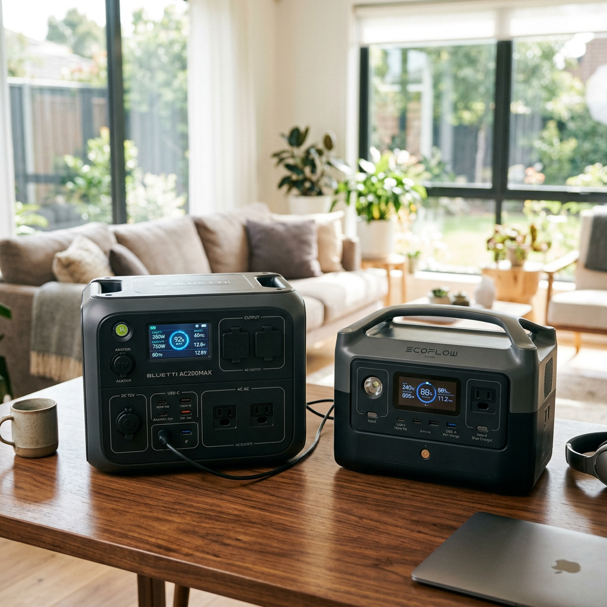
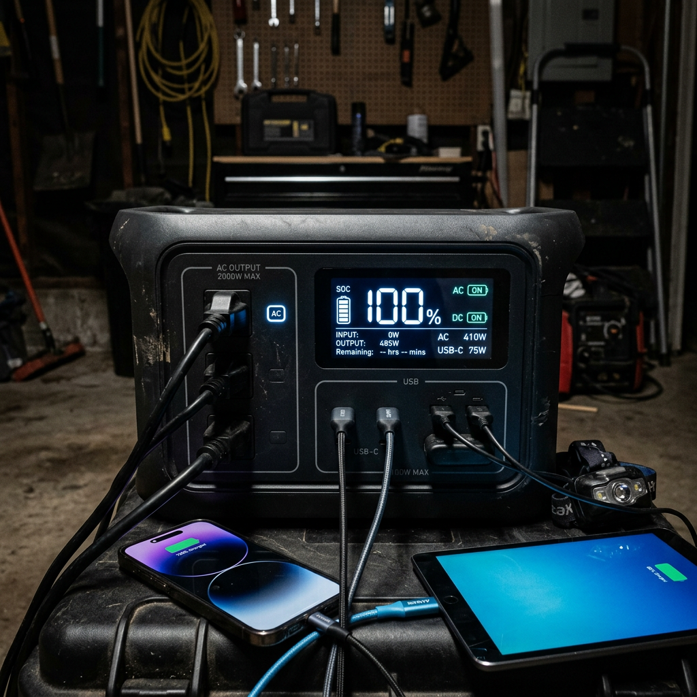
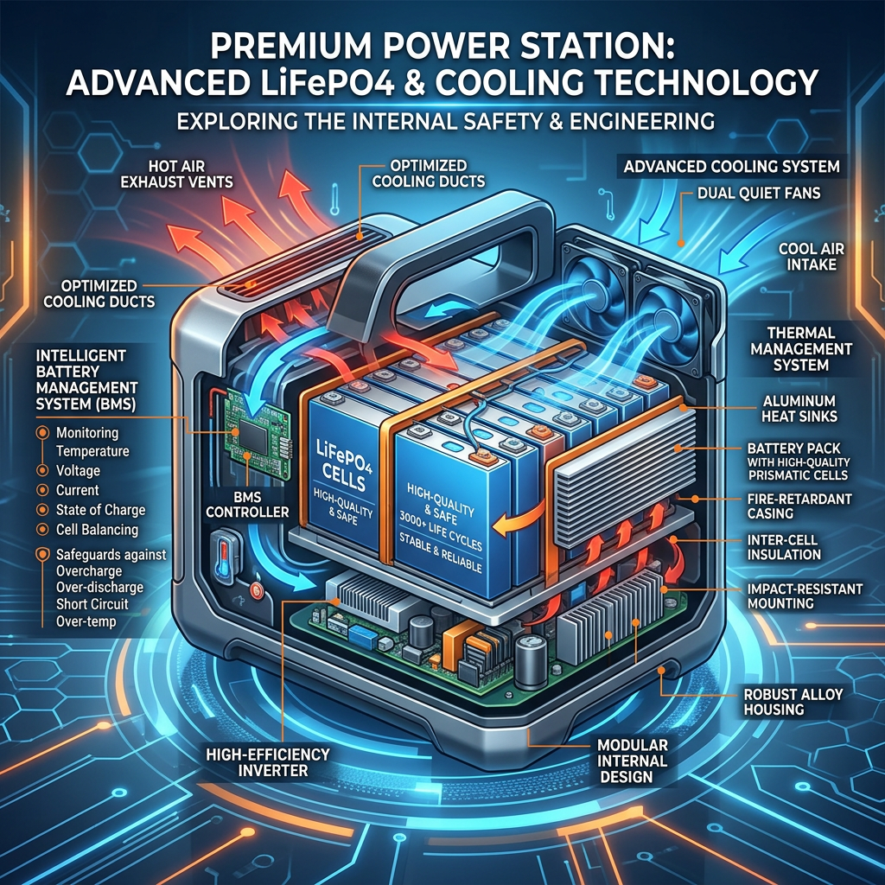

Anker SOLIX C2000 Gen 2 vs Bluetti Elite 200 V2: The Ultimate 2kWh Power Showdown
The High-Stakes Battle for Portable Power Supremacy
Imagine the lights go out. Your refrigerator stops humming, your medical devices lose power, and your connection to the world—your smartphone and laptop—begins a slow descent toward 0%. In these critical moments, a portable power station isn't just a luxury; it is a lifeline. But with the market saturated with high-capacity batteries, choosing between two titans like the Anker SOLIX C2000 Gen 2 and the Bluetti Elite 200 V2 can feel like a gamble with your home's security.
High-intent buyers know that the 2kWh capacity range is the 'sweet spot' for emergency backup and serious off-grid adventures. However, one of these units is built for a decade of reliability, while the other focuses on raw expansion. Below, we break down the specs, the real-world performance, and the long-term value to help you make the right investment.

| Feature | Anker SOLIX C2000 Gen 2 | Bluetti Elite 200 V2 | Verdict |
|---|---|---|---|
| Capacity | 2048Wh | 2073.6Wh | Tie |
| Cycle Life | 3,000+ Cycles (LFP) | 3,000+ Cycles (LFP) | Tie |
| AC Output | 2400W (Surge 3600W) | 2200W (Surge 4400W) | Anker for sustained load |
| Charging Speed | 80% in 58 Minutes | 80% in ~1.3 Hours | Anker wins |
| Warranty | 5-Year Full Warranty | 5-Year Full Warranty | Tie |
| Best For | Rapid backup & longevity | Expandable versatility | Anker for reliability |
Anker SOLIX C2000 Gen 2: The Longevity King
The Anker SOLIX C2000 Gen 2 is more than just a battery; it is a masterclass in electrical engineering. Utilizing Anker’s proprietary InfiniPower™ technology, this unit is designed to last over 10 years, even with daily use. While many power stations degrade quickly under high heat, the SOLIX C2000 Gen 2 features an industrial-grade structural design and smart temperature monitoring that checks heat levels up to 100 times per second.
For those who cannot afford to wait, the charging speed is a game-changer. Thanks to HyperFlash™ technology, you can go from a dead battery to 80% in under an hour. This is critical during intermittent power outages where you may only have a short window of grid availability to top up your reserves.
Key Benefits of the Anker SOLIX C2000 Gen 2:
- Unrivaled Durability: Impact-resistant build and high-quality LiFePO4 cells.
- Silent Operation: Advanced cooling fans that keep noise levels low enough for bedroom use.
- Intuitive App Control: Monitor every watt in real-time via Bluetooth or Wi-Fi.
- Versatile Ports: 12 outlets including a dedicated TT-30 port for RV enthusiasts.

Bluetti Elite 200 V2: The Versatile Challenger
The Bluetti Elite 200 V2 enters the arena with a slightly higher base capacity and a focus on modularity. Bluetti has long been a favorite for those who want to build out a larger ecosystem. The Elite 200 V2 offers a high surge capacity, which is excellent for starting heavy-duty appliances like power tools or large sump pumps.
However, where the Bluetti often falls behind is in the refinement of its user interface and the physical footprint. It remains a powerful contender, but when compared to the streamlined efficiency of the Anker SOLIX C2000 Gen 2, it feels more like a traditional utility tool than a modern smart-home appliance.
Critical Differences: Charging, Durability, and Ecosystem
When you are spending four figures on a power station, the 'devil is in the details.' Here is where the Anker SOLIX C2000 Gen 2 pulls ahead of the Bluetti:
- Thermal Management: Anker's design allows for better airflow, meaning the internal components stay cooler under heavy loads, directly extending the lifespan of the inverter.
- User Experience: The SOLIX interface is significantly more responsive. For high-intent buyers who want 'plug and play' simplicity, Anker wins the UX battle.
- Portability: Despite its massive capacity, the Anker SOLIX C2000 Gen 2 features an ergonomic handle design that makes it noticeably easier to transport during camping trips or emergency relocations.

The Final Verdict: Which Should You Buy?
The Bluetti Elite 200 V2 is a capable machine, but if you value speed, reliability, and peace of mind, the Anker SOLIX C2000 Gen 2 is the superior choice. Its ability to charge faster means you are prepared sooner. Its InfiniPower technology ensures that your investment won't be a paperweight in three years. And its build quality is simply the gold standard in the industry.
Don't wait for the next storm or off-grid emergency to realize you bought the wrong unit. Secure your energy independence today with the most reliable 2kWh unit on the market.